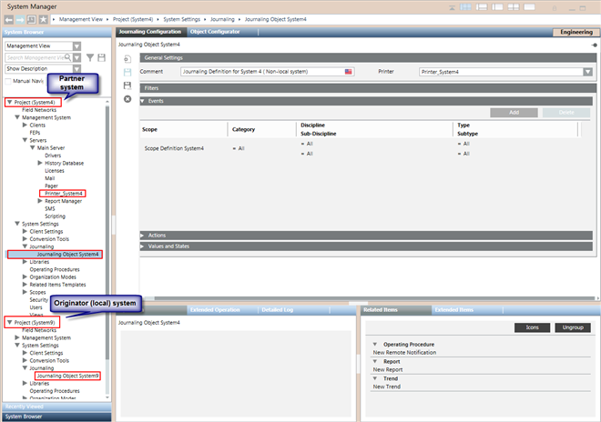

Additional Journaling Procedures
This section provides additional procedures for Desigo CC journaling related tasks.
Prerequisites
- System Manager is in Engineering mode.
- System Browser is in Management View.
Removing a Journaling Printer – Template Entry
- Select Project > System Settings > Journaling.
- In the Journaling Printers tab, select the printer-template entry you want to delete.
- Click Remove.
- Click Yes to confirm.
- The selected printer-template entry is removed from the list.
Deleting a Journaling Definition
- Select Project > System Settings > Journaling > [journaling definition].
- In the Journaling Configurator tab, click Delete
 .
. - Click Yes.
- The journaling definition is removed from System Browser.
Printing Journaling Events Manually
- You have configured journaling printouts using a page printer.
- Some buffered events ready for printing are available in the journaling cache.
- Select Project > System Settings > Journaling.
- Select the journaling definition for which buffered events exist in the journaling cache.
- In the Extended Operation tab, click Flush.
- The events present in the journaling cache are directed to the configured page printer for printing.
Configuring Journaling from a Partner System in a Distributed Environment
- You created and configured two active projects--P1 on System A and P2 on System B--with a bi-directional distribution connection between them. See Configuring the Projects in Distribution in the System Management Console Help and Journaling in Distributed Systems.
- You are logged on to a Server, Client or FEP station of System A, and from there you want to configure journaling printouts for System B.
- Select Project (System B) > Management System > Server > Main Server and configure a printer on System B as a journaling printer. See Configuring a Printer for journaling.
- Select Project (System B) > System Settings > Journaling complete the following steps:
- Map a Journaling Template to the configured printer and save the printer-template mapping.
- Create a New Journaling Definition, Configure its Filters, and Assign the Journaling Printer to the Definition.
- The journaling items are printed on the configured printer of System B.
